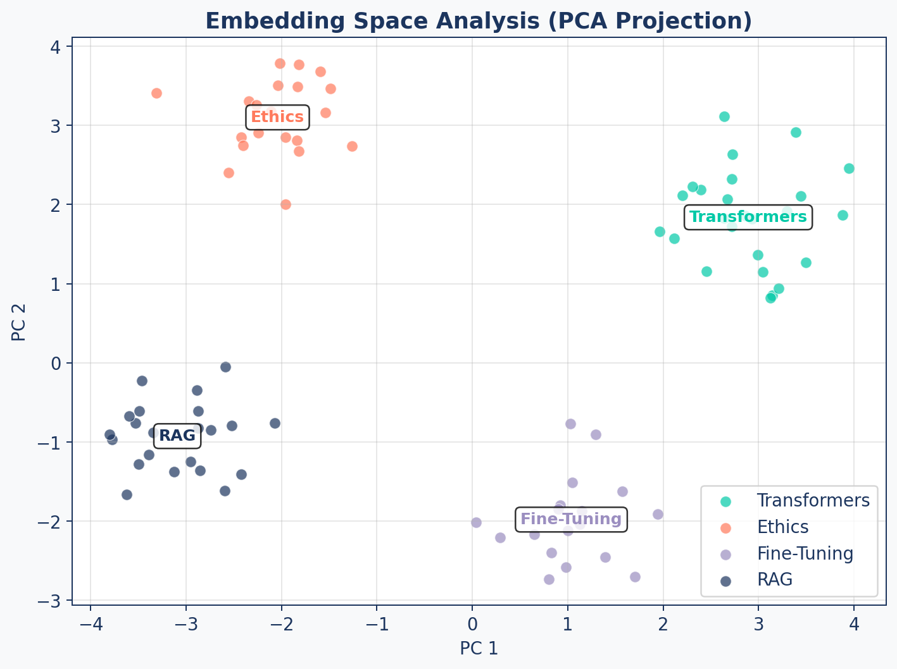

flowchart LR
A["PR to main"] --> B["Run Retrieval<br/>Eval Suite"]
B --> C{"Contextual Recall<br/>> 0.8?"}
C -- Yes --> D["Merge PR"]
C -- No --> E["Block +<br/>Alert"]
style A fill:#9B8EC0,stroke:#1C355E,color:#fff
style B fill:#00C9A7,stroke:#1C355E,color:#fff
style C fill:#9B8EC0,stroke:#1C355E,color:#fff
style D fill:#00C9A7,stroke:#1C355E,color:#fff
style E fill:#FF7A5C,stroke:#1C355E,color:#fff
Measuring Retrieval Quality
RAG Foundations & Data Pipelines — Session 3
2026-06-11
A. Why Measure
Establishing a baseline before you optimize
Agenda
- A. Why Measure — From feelings to data, and the golden dataset
- B. Retrieval Metrics — Hit Rate, MRR, Precision, Recall (+ optional NDCG@K)
- C. Embedding Diagnostics — Reading the vector space
- D. LLM-Judged Retrieval — Contextual Precision/Recall/Relevancy with DeepEval
- E. Wrap-up — The measure → improve loop
Why Evaluate?
“It returns results” is not the same as “it returns the right results.”
- Poor retrieval = #1 source of hallucination
- You can’t optimize what you can’t measure
- Changes to chunking/embedding can silently break retrieval
- Evaluation enables data-driven decisions
Why this comes first
You just built a brute-force retriever and saw a first taste of recall. Before swapping in a real vector store, hybrid search, or re-ranking, you need a baseline number — otherwise every “improvement” is a guess.
Why Small-Scale Benchmarks Lie
A demo corpus of a few hundred clean docs makes retrieval look solved. Enterprise corpora don’t.
- Real knowledge forms dense clusters of near-relevant content — many documents discuss the same topic; only one holds the exact answer.
- Retrieval then fails silently: it returns relevant-looking chunks, not necessarily the right one. No error, no empty result — just a confident wrong answer.
Retrieval is the reliability layer
At enterprise scale, retrieval stops being a “search feature.” It is the core reliability layer — which is why it must be measured at realistic scale (this deck) and hardened with hybrid retrieval, reranking, and metadata filtering (Beyond Basic Search).
Golden Dataset
A hand-curated set of query → relevant chunks pairs — your ground truth. Add an expected_output (the ideal answer) and it also anchors the LLM-judged Contextual metrics in Section D.
RETRIEVAL_BENCHMARK = [
{
"query": "What are ethical guidelines for AI?",
"relevant_chunk_ids": [
"doc_ethics_sec2_chunk0",
"doc_ethics_sec3_chunk1"
],
# Anchors the LLM-judged Contextual Precision/Recall metrics:
"expected_output": "The guidelines require human oversight, ...",
},
# ... 20-50 curated examples
]Production discipline
We curate by hand here. At scale, golden sets are mined from production traces — sampled, semantically de-duplicated, and PII-scrubbed — then frozen as a held-out test set. That full workflow lives in AI Agents → Observability & Evaluation.
B. Retrieval Metrics
Measuring retrieval quality with data, not feelings
Hit Rate@K
“Did we find something useful in the top K?”
\[\text{Hit Rate@K} = \frac{\text{queries with at least 1 relevant doc in top K}}{\text{total queries}}\]
Industry Benchmark: Hit Rate@5 > 0.80 is a common target for production-ready RAG systems, though requirements vary by domain.
MRR (Mean Reciprocal Rank)
“How quickly do we find the first useful result?”
\[\text{MRR} = \frac{1}{N} \sum_{i=1}^{N} \frac{1}{\text{rank}_i}\]
| Query | First Relevant at Rank | Reciprocal Rank |
|---|---|---|
| Query 1 | 1 | 1.000 |
| Query 2 | 3 | 0.333 |
| Query 3 | 2 | 0.500 |
| MRR | 0.611 |
Precision & Recall
Precision@K
“How much of what we show is good?”
\[P@K = \frac{\text{relevant in top K}}{K}\]
Critical for: UI real estate, user trust, chat assistants
Recall@K
“How much of all the good stuff did we find?”
\[R@K = \frac{\text{relevant in top K}}{\text{total relevant}}\]
Critical for: legal discovery, exhaustive search, research
Which Metric When?
| Use Case | Primary Metric | Why |
|---|---|---|
| Chat assistant | Precision@1 | First answer must be correct |
| Search results page | Precision@5 | Every result visible must be good |
| Legal discovery | Recall@K | Must find ALL relevant precedents |
| General QA | MRR | Quickly finding the best result |
| Quick health check | Hit Rate@5 | “Is it working at all?” |
| Graded ranking quality (optional) | NDCG@K | Best results must sit at the top |
From these to the lab
Hit Rate/MRR/Precision/Recall are deterministic, id-based checks. The lab scores the same retrieval with DeepEval’s LLM-judged Contextual Precision / Recall / Relevancy (Section D) — the framework you’ll reuse for generation scoring once you produce answers in From Context to Answer.
Binary Relevance Isn’t Enough
Traditional search
Getting the user to the right document is the finish line. The human skims and ignores the rest.
RAG
The chunk is pasted into the prompt. The LLM reads every token you retrieve — relevant or not.
A chunk can score a perfect Recall@K and still be mostly noise: retrieve 1024 tokens where only ~50 answer the query, and ~974 are distraction that degrades attention (→ hallucinations) and inflates cost.
Context density (a.k.a. chunk purity)
The fraction of a retrieved chunk that is actually relevant. Binary metrics can’t see it.
\[\text{Context Density} = \frac{\text{relevant tokens in chunk}}{\text{total tokens in chunk}}\]
Three Ways to Measure Partial Relevance
| Approach | How it scores | Cost | Best when |
|---|---|---|---|
| Token-level P/R (IoU-style) | Chunk tokens vs. exact golden spans | High — span labels | You have highlighted spans |
| LLM-as-judge (signal-to-noise) | Judge keeps relevant sentences; score = relevant ÷ total | Medium — judge calls | Most teams (default) |
| N-gram overlap (ROUGE-L / BLEU) | Longest common subsequence vs. the answer; drops when diluted | Low — no API/labels | Cheap CI proxy |
Approach #2 is exactly DeepEval’s Contextual Relevancy — coming up in Section D, and the metric your lab already runs.
Optional: NDCG@K — Ranking with Grades
Safe to skip on a time budget — the one metric that scores graded relevance and position together
NDCG@K — Graded, Position-Aware Ranking
The metrics so far each see only part of the ranking:
- MRR rewards only the first hit — everything after it is invisible.
- Precision/Recall@K count hits but treat all positions equally — rank 1 and rank 5 score the same.
NDCG@K asks the sharper question: “Are the best results at the top?” — using graded relevance (rel = 0/1/2/3, not just the binary in/out of Binary Relevance Isn’t Enough) and a position discount.
\[DCG@K = \sum_{i=1}^{K} \frac{rel_i}{\log_2(i+1)} \qquad NDCG@K = \frac{DCG@K}{IDCG@K} \in [0,1]\]
where \(IDCG@K\) is the \(DCG\) of the ideal ordering (grades sorted high→low). A perfect ranking scores 1.0.
Needs graded labels to shine
With this deck’s binary relevant_chunk_ids, NDCG still adds position discounting over Hit Rate. Its real power needs graded labels — extend the golden set from relevant_chunk_ids: [...] to a relevance: {chunk_id: grade} map (3 = exact answer, 1 = related context, 0 = noise).
NDCG@K — Worked Example
Top-5 retrieved, graded [3, 2, 0, 1, 0]. The ideal ordering would be [3, 2, 1, 0, 0].
| Rank \(i\) | Grade \(rel_i\) | Discount \(\log_2(i{+}1)\) | Discounted \(rel_i / \log_2(i{+}1)\) |
|---|---|---|---|
| 1 | 3 | 1.000 | 3.000 |
| 2 | 2 | 1.585 | 1.262 |
| 3 | 0 | 2.000 | 0.000 |
| 4 | 1 | 2.322 | 0.431 |
| 5 | 0 | 2.585 | 0.000 |
| DCG | 4.693 |
\[IDCG = \tfrac{3}{1.000} + \tfrac{2}{1.585} + \tfrac{1}{2.000} = 4.762 \qquad NDCG@5 = \frac{4.693}{4.762} \approx \mathbf{0.99}\]
The lone misranked chunk (a rel=1 stuck at rank 4 while a rel=0 sits at rank 3) nudges the score just below a perfect 1.0 — exactly the ordering error that Hit Rate and Recall can’t see.
C. Embedding Diagnostics
Reading the vector space behind your retrieval
Embedding Analysis

Cluster Distances
A good embedding space has low intra-cluster and high inter-cluster distances.
| Metric | Good | Bad |
|---|---|---|
| Intra-cluster distance | < 0.3 | > 0.5 |
| Inter-cluster distance | > 0.6 | < 0.4 |
| Separation ratio (inter/intra) | > 2.0 | < 1.0 |
These thresholds are rough starting points. Actual “good” values depend on the embedding model and domain — calibrate against your own corpus.
Diagnostic Tool
Run embedding analysis periodically. A sudden drop in cluster separation may indicate document quality issues or embedding model drift.
D. LLM-Judged Retrieval Metrics
Beyond id-based checks — grading retrieval with a strong LLM
Why LLM-as-Judge for Retrieval
Hit Rate/MRR/Precision/Recall need a hand-labelled relevant_chunk_ids list. Contextual metrics instead ask a strong LLM whether the retrieved context is relevant, complete, and well-ordered — graded against the expected_output, not a fixed id set.
Judge Prompt: "Given this question and the retrieved
context, is each chunk relevant, and is
the relevant context ranked first?"DeepEval, RAGAS, and other frameworks automate this pattern.
Judges need calibration
LLM judges have biases (position, verbosity, self-preference) and must be calibrated against human labels before they can gate releases. The full treatment — pairwise judging, bias mitigation, the SME-to-judge pipeline — is in AI Agents → Observability & Evaluation.
Contextual Metrics
| Metric | What It Measures | Catches |
|---|---|---|
| Contextual Precision | Is relevant context ranked high? | Poor retrieval ordering |
| Contextual Recall | Did retrieval find all the relevant context? | Missing chunks |
| Contextual Relevancy | Is the retrieved context on-topic? | Noisy retrieval |
All three use “LLM-as-Judge” — a strong model grades the retrieved context against the ideal answer.
This is the chunk-purity score
Contextual Relevancy is the automated signal-to-noise metric from Section B (approach #2) — so the knobs it actually tests are your chunk size and top-K.
DeepEval Setup
import os
from deepeval.metrics import (
ContextualPrecisionMetric, ContextualRecallMetric,
ContextualRelevancyMetric,
)
from deepeval.models import LiteLLMModel
# One judge for every metric. Pass a LiteLLMModel object — a bare
# model="..." string would default DeepEval to OpenAI.
judge = LiteLLMModel(
model=os.getenv("EVAL_JUDGE_MODEL",
"openrouter/deepseek/deepseek-chat-v3.1"),
temperature=0)
contextual_precision = ContextualPrecisionMetric(threshold=0.7, model=judge, include_reason=True)
contextual_recall = ContextualRecallMetric(threshold=0.7, model=judge, include_reason=True)
contextual_relevancy = ContextualRelevancyMetric(threshold=0.7, model=judge, include_reason=True)Running the Suite
from deepeval import evaluate
from deepeval.test_case import LLMTestCase
# One LLMTestCase per golden query; expected_output anchors the
# Contextual metrics, retrieval_context is the ranked chunks scored.
test_cases = [
LLMTestCase(
input=item["query"],
actual_output=item["answer"],
expected_output=item["expected_output"],
retrieval_context=item["retrieval_context"],
)
for item in GOLDEN_DATASET
]
# One judged run over every (test case x metric) — your retrieval BASELINE
evaluate(test_cases=test_cases,
metrics=[contextual_precision, contextual_recall,
contextual_relevancy])In CI, swap evaluate(...) for assert_test(test_case, [...]) to fail the build when any metric drops below threshold.
CI/CD Integration
Gate every PR on retrieval metrics. A change to chunking or embeddings can silently break retrieval.
E. Wrap-up
The measure → improve loop
The Retrieval Eval Stack
flowchart TD
A["Retrieval Layer"] --> B["Id-Based Metrics"]
A --> C["LLM-Judged Metrics"]
A --> D["Embedding Diagnostics"]
B --> E["Hit Rate@K"]
B --> F["MRR"]
B --> G["Precision/Recall@K"]
C --> H["Contextual Precision"]
C --> I["Contextual Recall"]
C --> J["Contextual Relevancy"]
D --> K["Cluster Separation"]
E & F & G & H & I & J & K --> L["Dashboard +<br/>CI/CD Gates"]
style A fill:#1C355E,stroke:#1C355E,color:#fff
style B fill:#00C9A7,stroke:#1C355E,color:#fff
style C fill:#FF7A5C,stroke:#1C355E,color:#fff
style D fill:#9B8EC0,stroke:#1C355E,color:#fff
style L fill:#9B8EC0,stroke:#1C355E,color:#fff
This is the retrieval half. Once you produce answers (citation-aware prompting in From Context to Answer), the same DeepEval framework scores the generation half — Faithfulness and Answer Relevance.
The Feedback Loop
Evaluation is not a one-time task — it’s a continuous measure → improve loop.
| Step | Action |
|---|---|
| 1. Measure | Run the retrieval eval suite on the current system |
| 2. Diagnose | Identify the weakest metric (low recall? poor ranking? noisy context?) |
| 3. Fix | Adjust chunking, embeddings, or the retrieval strategy |
| 4. Re-measure | Verify the change improved the metric without breaking others |
| 5. Repeat | Every change is justified by a measured gain |
Key Takeaways
- A golden dataset of
(query → relevant chunks, expected answer)is your ground truth - Hit Rate@K answers “is it working at all?”; MRR measures how soon the first hit appears
- Precision@K vs Recall@K trade “what we show is good” against “we found it all”
- Embedding diagnostics catch a degrading vector space before metrics crater
- LLM-judged Contextual metrics (Precision/Recall/Relevancy) grade retrieval against the ideal answer — one DeepEval framework, reused for generation later
- Measure first — this retrieval baseline is what every later optimization (real vector store, hybrid search, re-ranking) is judged against